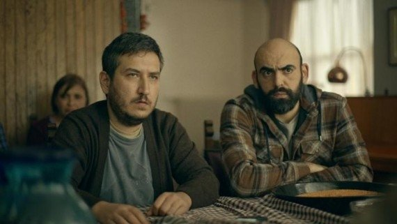

Merhabalar. Ben M. Sadet Turhan, Rize'de yaşıyorum. Kodlamaya ilgi duyuyor ve öğrenmek istiyorum!
İlgi Alanlarım
Film
Dizi
Kitap
Bu aralar izlemekten en keyif aldığım dizi: Gibi
ibi, komedi türündeki Türk yapımı internet dizisidir. İlk bölümü 1 Ocak 2021 tarihinde yayınlanan dizinin başrollerinde Feyyaz Yiğit, Kıvanç Kılınç ve Ahmet Kürşat Öçalan yer almaktadır.